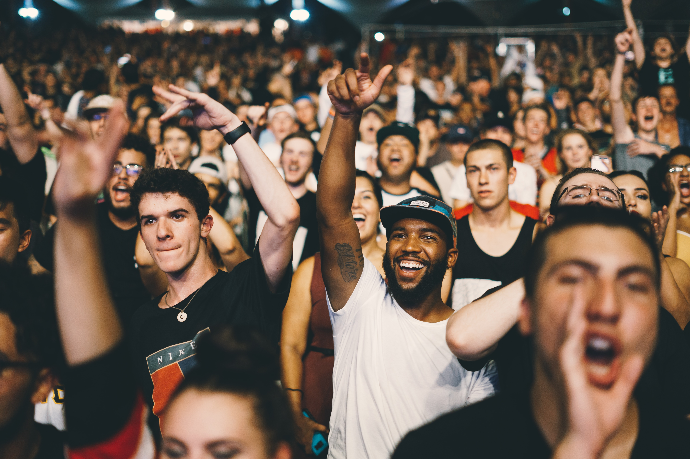

Reasons to train Muay Thai
Burns Calories Effectively.
Health and wellness are the main reasons to take up
exercising. As the saying goes in fitness circles, “abs are
made in the kitchen”. In order to achieve the ideal body goal,
a well-balanced, healthy and nutritious diet is the most
important factor. That said, the right exercise routine can
make the job easier. For anyone looking to lose fat, the key
is to burn those calories and there are very few sports that
do it as powerfully as Muay Thai. One hour of Muay Thai
training burns around 690 calories. Just take one look at any
Muay Thai fighter’s body: there is hardly an ounce of fat.
Enough said.
Strengthens The Body.
Let’s be honest here: Muay Thai training is tough. Each
session lasts from 1 to 2 hours and incorporates multiple
rounds of shadow boxing, heavy bagwork, padwork, strength
training and conditioning exercises. A traditional training
for fighters will even include a 3-5km run as a warm-up. A
sore body today is a strong body tomorrow.

Widens Social Circle.
There is always a strong sense of comradeship at every Muay
Thai gym. There is a common interest in learning Muay Thai;
everyone is working towards the shared goal of
self-betterment; blood and sweat are shed during training; and
this is how the deepest friendships are forged. Friends who
slay together, stay together.
Fun.
For all fitness enthusiasts who are sick of running on the
treadmill or lifting the same old weights, Muay Thai is the
antidote. Besides learning different techniques and combos,
modern Muay Thai training incorporates a variety of exercises
that makes training fun and effective at the same time. When
the activity is interesting, there is more motivation and
incentive to train. Whether for recreation or fitness, Muay
Thai is an ideal activity that is fun and fulfilling..
Improves Self-Confidence.
One of the most commonly cited benefits of training Muay Thai
is that it improves self-confidence. This can happen for
various reasons. Training Muay Thai makes you leaner and gets
you in a better shape. And when a person feels good about the
way they look, the more confidence they ooze. Secondly, if one
makes an effort to train Muay Thai regularly, he/she will get
better at it and so will their confidence grow.
Self-confidence is the most beautiful outfit.

Lowers Blood Pressure.
Cardiovascular illness is the number 1 cause of death
globally. One of the most common heart diseases is
hypertension, or high blood pressure, which can lead to
serious complications like stroke and heart failure. The first
step to reducing the risk of developing heart diseases is to
make positive changes by engaging in regular cardiovascular
exercises. As a cardio-intensive sport, regular training in
Muay Thai can reduce blood pressure and strengthen the heart.
Being healthy isn’t a fad or a trend, it is a lifestyle and
Muay Thai can help to achieve it.
Easy to learn
Unlike many martial arts that focus on katas (or forms), Muay
Thai is straightforward and to the point. There is no
elaborate or detailed choreography and the moves are not
designed to be performed for entertainment purposes. Muay Thai
is a stand-up striking style that was developed to hurt the
opponent in the most efficient way. They are effective yet
instinctive enough to be picked up easily. No need for
memorizing fancy, complicated movements. Easy as 1-2-3.

Self-defence
The Muay Thai elbow strike is one of the most dangerous and
effective weapons to possess. In the ring, this one technique
has ended countless fights, often via bloody technical
knockout. Another one of Muay Thai’s effective techniques is
that of the teep, or push kick, that can disrupt and stop an
offending attack. These, and other Muay Thai techniques can
translate to powerful self-defence skills in real life. Nobody
wants to be in any threatening situations but being armed with
martial arts skills like Muay Thai can’t hurt. Men, and
especially women, can definitely benefit from learning Muay
Thai.
Builds Mental Toughness
Training Muay Thai, one is often pushed to the limits and
beyond, physically and mentally. The physical demands of the
training simply requires a lot of mental perseverance. So Muay
Thai strengthens not only the body, but also the mind. The
beginning is always the hardest but if you push yourself, and
the mind will get stronger too. Regardless of what you do,
mental toughness can help you handle and manage any challenges
in life.

Get an Endorphin Rush
Nothing beats the natural high from a good, intensive
workout. Scientifically speaking, this feeling of pleasure
comes from the release of endorphins, which are a group of
chemicals secreted within the brain and nervous system.
Endorphins are known to block pain, and promote a sense of
comfort and well-being which can help in stress management.
Additionally, endorphins are a natural relaxant and can help
one to sleep better. The intense workout of Muay Thai training
is guaranteed to give one an endorphin rush.